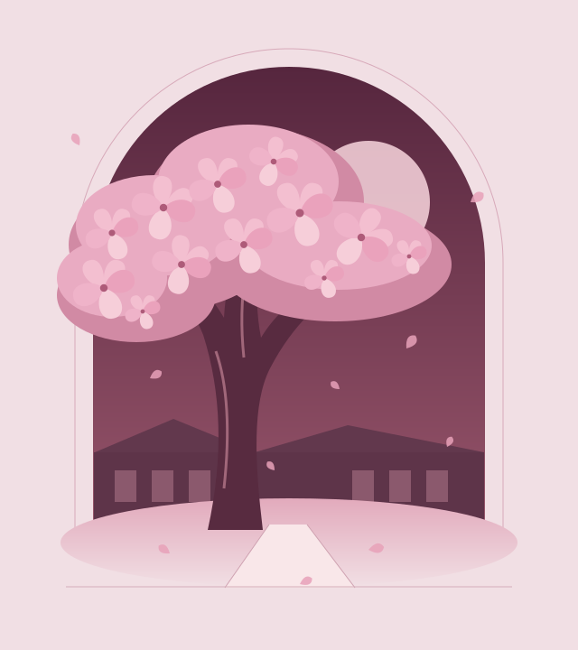

UM PROJETO DA SILENT GARDEN
Todo sentimento
tem seu lado
mais sombrio.
Entre os corredores da Hanakawa High, uma história de amor e obsessão começa a florescer.
Em desenvolvimento Planejado para PC e mobile

01 / O JOGO
Por trás das pétalas,
Ayame Kurohana.
Uma escola. Um sentimento por Ren Hayato. Cinco rivais no caminho.
Blood Petals é um jogo em desenvolvimento da equipe Silent Garden, inspirado no estilo de Yandere Simulator e com personagens e universo próprios.
A história acompanha Ayame Kurohana na Hanakawa High, no Japão. A campanha está planejada em cinco semanas, cada uma dedicada a uma rival.
02 / AS RIVAIS
Cinco semanas.
Cinco encontros.
Conheça as personagens que marcam cada semana da história. Selecione um nome para saber mais.
01 SEMANASakura MizunoJardinagem
Líder do Clube de Jardinagem e a primeira rival de Blood Petals.
CLUBE DE JARDINAGEM02 SEMANAHaruka AizawaArtes
Integrante do Clube de Artes e a rival da segunda semana.
CLUBE DE ARTES03 SEMANAMei TanakaEsportes
Integrante do Clube de Esportes e a rival da terceira semana.
CLUBE DE ESPORTES04 SEMANAYui HoshinoTeatro
Integrante do Clube de Teatro e a rival da quarta semana.
CLUBE DE TEATRO05 SEMANARika FujimotoGrêmio Estudantil
Integrante do Grêmio Estudantil e a quinta rival de Blood Petals.
GRÊMIO ESTUDANTIL03 / O PRÓXIMO CAPÍTULO
O jardim ainda
está crescendo.
Blood Petals está sendo criado para PC e mobile, com dublagem brasileira prevista. Esta página apresenta o universo e os personagens já definidos para o projeto.
Novidades, materiais e informações sobre versões jogáveis serão adicionados conforme forem confirmados.
Acompanhe o site no GitHub